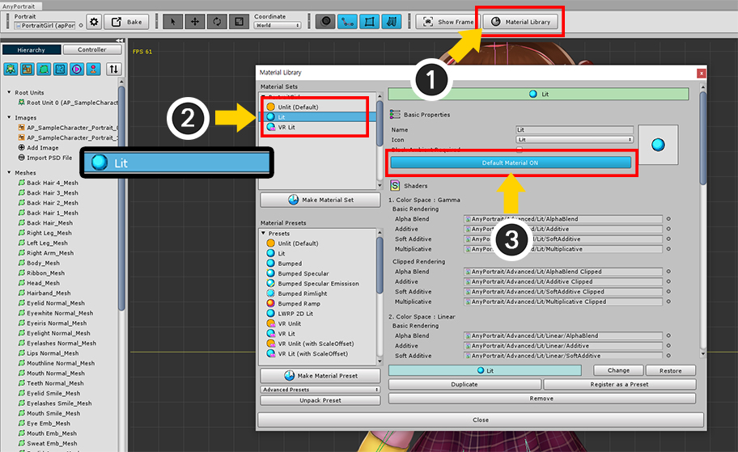

AnyPortrait > Manual > Build to VR
Build to VR
1.2.0
VR (Virtual Reality) is a technology that lets you play games realistically using a device called HMD (Head-Mounted Display).
(In a broad sense, VR encompasses all the techniques and concepts of enjoying virtual reality, but we'll only cover VR and HMD in the current market.)
Unity supports VR like any other game engine, so you can build VR for mobile, PC and console.
AnyPortrait is an editor that creates 2D characters, so it was a bit far from VR.
However, at the request of many users, it supports the Unity VR function starting from v1.2.0.
Before explaining this feature, it is recommended that you read the description in the following links.
VR Overview page (Unity official page)
Material Library
Note that.
VR build methods are slightly different depending on the version of Unity, and depending on the target device,
so AnyPortrait's VR feature may not be fully supported in some cases.
Please let us know the problem you are experiencing, including the version of your Unity engine and your VR device.
This page is based on Unity 2019.2 and may vary slightly depending on the version.
Render by applying a VR material

We created a scene to build VR.
A small room by placing 3D objects is created, and several Point Lights are placed.
In this space, a character created by AnyPortrait is located.

Select "Project Settings > Player" or open "Build Settings > Player Settings".
(1) Turn on the Virtual Reality Supported property in the XR Settings.
(2) Press the "+" button to add the VR environment to build and Mock HMD for the test.
(The screenshot above is from a PC environment, with different build options on mobile or console platforms.)

Select Stereo Rendering Mode.
Multi Pass and Single Pass have internal differences in VR rendering.
AnyPortrait supports all of the above methods, but this difference requires testing on the device.
In particular, check out the "Scale Offset" issue below.
Single Pass has been confirmed to have an issue where clipping masks do not work properly.
It is recommended to set it to Multi Pass.

With Mock HMD registered, you can check the VR rendering in the editor.
In the Game tab, select "Occlusion Mesh" as shown above to virtually see the simulated screen as seen in the HMD.
When you run the game, it will usually render without any major problems,
but you will see that the "clipping mesh" does not render properly.
The biggest issue with AnyPortrait's VR support is "Does the clipping mesh look normal on the two screens of VR?"
You can solve this problem by following these steps:
Open the AnyPortrait Editor.
(1) Press the Material Library button.
(2) Select "VR Presets".

(1) Press the Unpack Preset button to install the selected "VR Presets".
At this point, the Material Library exits with the message that you have to restart the material library.
(2) Restart the Material Library and you will see four material presets added for VR.
These material presets are as follows:
- VR Unlit : Material preset for VR that renders the colors of the original image in a scene without lights.
- VR Lit : Material preset for VR rendered with lighting applied.
- VR Unlit / VR Lit (with ScaleOffset) : Material preset for VR used in the Single Pass setting.
There is an important point!
Materials with Scale Offset applied are the material presets that should be used in the Single Pass setting.
The shaders of this material have an especial formula applied with a variable for Single Pass called "Scale Offset" based on Unity's reference.
However, in our tests, "not using Scale Offset" was rendered properly even in the Single Pass setting.
Therefore, please test first with these Materials that do not use the Scale Offset, and then, try to use the Material with the Scale Offset only if a problem occurs.
(1) Press the Make Material Set button.
(2) Since the Point Lights are placed in the current scene, select the VR Lit preset.
(3) Press the Select button.

(1) Select the newly created material set.

If you look at the material set for VR, you'll see something different from the existing material set.
Existing material sets use the _MaskTex property, whereas VR material sets use two properties: _MaskTex_L and _MaskTex_R.
These are for the mask textures of two renderings, like eyes.

(1) Press the Default Material button to set it as the default material.
A good way to position AnyPortrait characters in 3D space without discomfort is to use Billboard.
(See the related page for details.)
(1) Press the Bake button.
(2) Select the Setting tab.
(3) Change the Billboard options. Select "Billboard" or "Billboard with fixed Up Vector".

This is most important step in setting up VR.
(1) Change the VR Option to "Single Camera and Eye Textures (Unity VR)".
This option must be selected if you are using Unity's VR build.
The contents of each of these options are as follows:
- None : It is used when there is only one camera that renders the character without using VR build.
- Single Camera and Eye Textures (Unity VR) : It must be set when using Unity's VR build.
- Multiple Cameras : It is used when rendering with two or more cameras without using Unity's VR build.
When you change the VR option, the "Mask Texture Size" option appears.
This option is related to the quality of the clipping mask.
- By Mesh Setting
: The clipping mask is created according to the "texture size of the clipping mask" of the mesh specified in the mesh group setting.
The clipping mask can be scaled according to the size of the mesh to help optimize it.
In the case of VR rendering than normal rendering, the clipping mask may be of poor quality, so you should use a relatively large mask texture size.
- By Eye Texture Setting
: The size of the eye texture related to the image quality of VR is used as the size of the clipping mask.
All clipping masks create a mask that is the same size as the screen, ensuring uniform picture quality.
Depending on the VR build environment or the running device, the image quality may be very low when the Eye Texture size is slightly smaller.
You can use any option, but for further explanation, let's choose (2) By Mesh Setting here.

If you selected By Mesh Setting, you will need to change the texture size of the clipping mask.
In VR, the optimization of the clipping mask is not handled, so we need to increase the resolution of the texture.
(1) Select the Mesh Group.
(2) Select the Setting tab.
(3) Select the mesh to be the clipping mask.
(4) Change the Mask Texture Size value to a large value.

Now let's run Bake and apply it to the scene.

You can see that it renders normally on the VR screen.
To turn off Billboard options and Render
In some cases, it may be necessary to place a character in VR space without using the billboard.
The biggest problem at this time is the Z-Fighting problem.
This is because AnyPortrait's structure, with many meshes placed back and forth at narrow intervals, does not render properly even if the camera's angle changes a little.
In this case, you can solve this problem by using Sorting Group. (Related page)

First, let's turn off the Billboard option.
(1) Press the Bake button.
(2) Select the Setting tab.
(3) Change the Billboard option to None.

(4) Change the Sorting Order Option to Depth To Order.
Run Bake when you're done.
After Bake, open Unity Editor.
(1) Select the character.
(2) Add a Sorting Group component.

When you run the game, you can see the character being rendered normally even when the billboard is not applied.
Create the VR screen without using Unity's VR settings
Unity's VR feature is powerful, but there are other ways to create the VR screen.
In the many alternatives, "Using two cameras" is probably the most useful.
AnyPortrait gives you the option to make the rendering normally even when two or more cameras are placed.

Turn off Virtual Reality Supported in Player Settings.
Makes 1 existing camera into 2 cameras corresponding to Left and Right.

This is settings of the cameras.
Modify the Viewport Rect as above to specify the render area.
The other settings are the same.

You will see two cameras render in the left and right areas respectively.
By modifying the position and angle of the camera, you can achieve the same effect as the actual field of view.

This approach does not require VR materials, unlike Unity's VR feature.
Therefore, it must be returned to its original material.
(1) Open the AnyPortrait Editor and press the Material Library button.
(2) Select the Lit material set, which is the original material. (Or create a new or similar material.)
(3) Press the Default Material button to select the default material.

(1) Press the Bake button.
(2) Select the Setting tab.
(3) Change the VR Option value to Multiple Cameras.
This option is effective in most cases when rendering with multiple cameras.
When you run the game, you will see that it renders normally even when you render with two cameras.
About Clipping Mask Resolution , VR and Multiple Cameras
AnyPortrait implements the clipping mask technique using a Render Texture.
Increasing the resolution of the render texture improves quality, but decreases the game's performance.
AnyPortrait uses a method of its own developed that results in fairly high-quality rendering even with low-resolution clipping masks.
However, this quality compensation method is only valid in an environment of "one camera".
So in all other cases, you need to create a clipping mask with a higher resolution than before.
For this reason, in most cases, the clipping mask degrades in the VR rendering environment.
Whether the clipping mask is corrected for high quality relative to resolution is:
1. When the correction method is applied
- Only 1 Orthographic Camera
- When the Billboard is turned on when there is one Perspective camera
- When multiple cameras are in the same location and in the same direction, all are orthographic, and the character's VR Option is Multiple Cameras
2. When the correction method is not applied
- Unity VR option is on
- All cases that do not satisfy the condition of 1